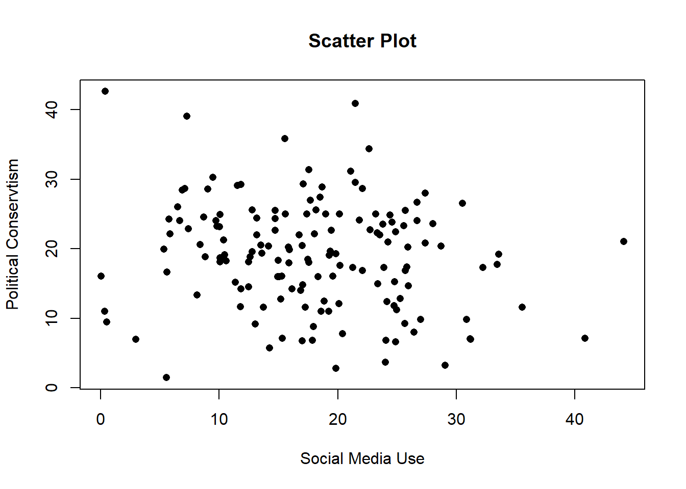
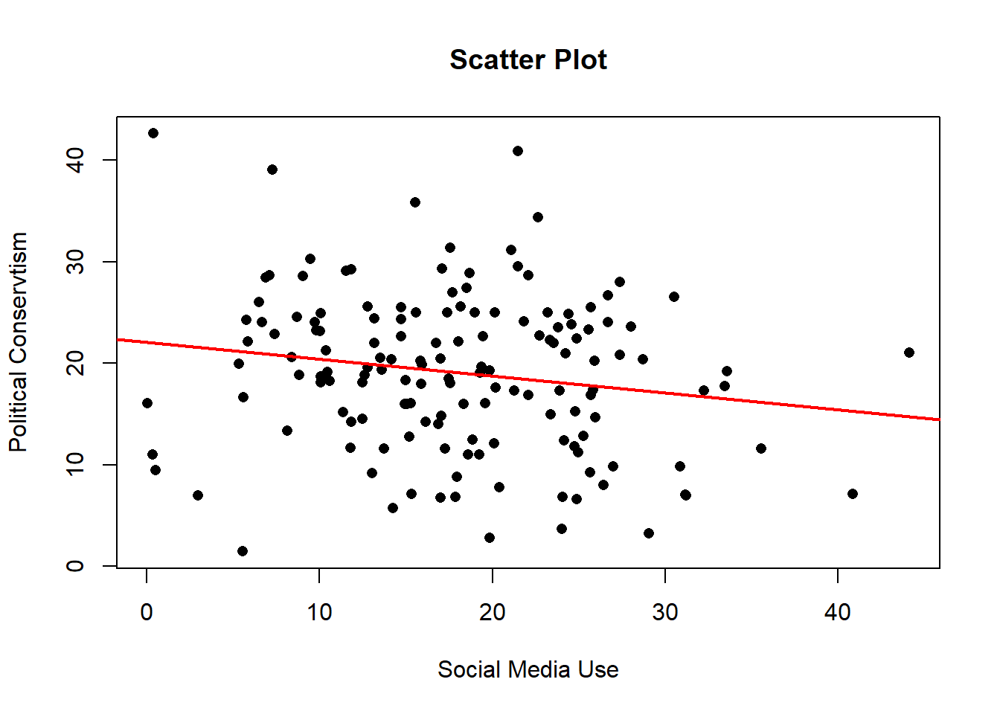

1 + 1[1] 2This document was built using Quarto. Quarto enables you to weave together content and executable code into a finished document. To learn more about Quarto see https://quarto.org.
Below is a snippit of R code that is executed when the document is created.
You can copy these code snippits into your own RStudio to begin to build you own analyses. As you go through the document create a new R script in RStudio and add the code section one after another. By then of this each section you will have built an analysis pipeline for each type of design. You can then use this as a basis for future analyses.
In the data set we will use for this tutorial (it is an imaginary study). the data comes from a study of the correlates of trust in traditional journalism in a sample drawn from the general population. Participants provided demographic information (age, gender) and completed a battery of questionnaires that measured the following variables: - trust in traditional journalism (TTJ; higher scores reflect greater trust in traditional journalism outlets [e.g.,newspapers]); - social media use (SMU; average number of hours per day spent on social media platforms such as Facebook, Instagram, Twitter, TikTok, etc.); - reliance on traditional vs. social media for news (RTN; relative reliance [%] on traditional media sources relative to social media platforms for news; higher scores reflect greater reliance on traditional media); - endorsement of conspiracy theories (ECT; higher scores reflect greater belief in a range of conspiracy theories); - political conservatism (PC; higher scores reflect greater conservatism); - mistrust of experts (ME; higher scores reflect greater mistrust of experts [medical professionals, scientists, economists, legal scholars, etc.]).
We will use our familiar code pattern to clear the Environment and load the data from the csv file.
age gender smu rsm ect pc
1 64 0 24.82422 41.01882 17.81689 15.273564
2 81 0 17.58041 45.31633 14.52861 18.015221
3 67 0 30.89202 46.21940 17.36508 9.807414
4 63 0 12.49083 42.54467 17.59220 18.120238
5 54 1 24.02393 41.56892 12.16890 3.710834
6 58 1 9.79409 45.16734 17.66462 23.201985 age gender smu rsm
Min. :32.00 Min. :0.0 Min. : 0.0256 Min. :33.45
1st Qu.:51.00 1st Qu.:0.0 1st Qu.:12.5160 1st Qu.:42.36
Median :59.00 Median :0.5 Median :17.6306 Median :45.35
Mean :58.96 Mean :0.5 Mean :17.9376 Mean :45.49
3rd Qu.:66.00 3rd Qu.:1.0 3rd Qu.:23.9875 3rd Qu.:48.79
Max. :90.00 Max. :1.0 Max. :44.1446 Max. :55.06
ect pc
Min. :12.17 Min. : 1.486
1st Qu.:16.06 1st Qu.:14.088
Median :17.35 Median :19.337
Mean :17.43 Mean :19.087
3rd Qu.:18.93 3rd Qu.:24.214
Max. :23.78 Max. :42.592 age gender smu rsm ect pc
"integer" "integer" "numeric" "numeric" "numeric" "numeric" Here the only variable that we need to change into a factor is df$gender. This is coded a 0 for male and 1 for female (this is purely for statistical simplicity in the tutorial and is not making any claims about the number of genders).
M F
75 75 All of our other variables of interest are continuous variables and therefore to examine the relationship between them we will use correlations.
The first thing we want to do is to check the degree of correlation between variables. In R the function to perform correlations is cor.test(). If we wanted to look at the help for this function to understand how it works what would we type into the console:
?cor.test or help(cor.test)
If we wanted to examine the correlation between social media use (smu) and political conservatism (pc) we would use:
Pearson's product-moment correlation
data: df$smu and df$pc
t = -2.1365, df = 148, p-value = 0.03428
alternative hypothesis: true correlation is not equal to 0
95 percent confidence interval:
-0.32424730 -0.01307521
sample estimates:
cor
-0.1729743 Here is how we would write this up in a report:
A Pearson correlation was conducted to examine the relationship between social media use (smu) and PC scores. There was a statistically significant, weak negative correlation between the two variables, r(148) = −.17, p = .034.
Try to spot where the numbers in the report come from in the output, as with t-tests and ANOVAs everything we need is present, it is just a matter of getting the information from the right places. Also notice that the direction of the correlation being negative is reported as well as its size, this is vital information to include.
A common way of depicting the relationship between two continuous variables is with a scatter plot, to do this we will use the plot() function.

To better visualise the pattern of the relationship we can add a best fit line using the following code:

This shows the weak negative relationship that the statistics indicated, as scores on Social Media Use increase, Political Conservatism decreases. The function abline() allows us to draw straight lines on plots. The input argument we gave to abline() to create this straight line relationship was a linear model created by the lm() function, we will come back to this later when we look at how to perform regressions.
Often we want to examine the correlations between all of our variables at one time, instead of checking this pair by pair we can use cor() to check all of our numeric variables at one time.
age smu rsm ect pc
age 1.000000000 -0.46552533 -0.15281053 -0.001234091 0.32043604
smu -0.465525326 1.00000000 0.16967350 -0.016880581 -0.17297427
rsm -0.152810525 0.16967350 1.00000000 0.303801652 0.02200696
ect -0.001234091 -0.01688058 0.30380165 1.000000000 0.04570774
pc 0.320436045 -0.17297427 0.02200696 0.045707738 1.00000000You’ll notice that here we used cor() instead of cor.test(), cor() does not perform a statistical test of significance (we don’t get p values), instead it outputs a correlation matrix of the pearson R coefficients.
The first thing to notice about this matrix is that on the diagonal from top-left to bottom-right are all 1s. This is because each cell in the matrix holds the pearson R coefficient for the correlation between the variable named in the row and the one in the column. Those on the diagonal are therefore the correlation of a variable and itself, which by definition is 1.
The other thing to notice is that the matrix is symmetrical around this diagonal, so the value of -0.0012 in the 4th row, 1st column, is the same as that in the 1st row, 4th column. This is because the correlation of ect ~ age is identical to that of age ~ ect, the order we specify the variables in a correlation does not matter.
It is usually good practice to also visually inspect your data, and we can produce a scatterplot matrix using the pairs() function:
Earlier to create a straight line of best fit to add to our correlation plot we used the function lm(). This is also the function we can use to compute more complex regressions later on. However, for now it is useful as an illustration.
Call:
lm(formula = pc ~ smu, data = df)
Residuals:
Min 1Q Median 3Q Max
-19.6636 -5.3971 0.3076 5.4721 22.3335
Coefficients:
Estimate Std. Error t value Pr(>|t|)
(Intercept) 22.06704 1.52829 14.439 <2e-16 ***
smu -0.16615 0.07777 -2.137 0.0343 *
---
Signif. codes: 0 '***' 0.001 '**' 0.01 '*' 0.05 '.' 0.1 ' ' 1
Residual standard error: 7.646 on 148 degrees of freedom
Multiple R-squared: 0.02992, Adjusted R-squared: 0.02337
F-statistic: 4.565 on 1 and 148 DF, p-value: 0.03428The formula pc ~ smu reads as “pc predicted by smu” — same left-side-outcome, right-side-predictor convention you’ve used in aov() and other places throughout these tutorials. Also, as you have seen previously summary() gives you the full output of these models. In the case of regression we get: the intercept and slope estimates, their standard errors, t-values and p-values, plus R², and the overall model F-test.
Interestingly if we compare this output to the output of the correlation we performed earlier we will observe some patterns.
Pearson's product-moment correlation
data: df$smu and df$pc
t = -2.1365, df = 148, p-value = 0.03428
alternative hypothesis: true correlation is not equal to 0
95 percent confidence interval:
-0.32424730 -0.01307521
sample estimates:
cor
-0.1729743 The first is that the p value for the correlation is identical to that of the overall model F-test at the bottom of the regression output. The second is that the degrees of freedom in the correlation and the F test also match. The last is harder to spot but if you take the r value from a correlation and square it, you get the R2 value of the regression:
Performing a regression with a single predictor is identical to performing a pearsons correlation. In fact regression, ANOVAs, t-tests and correlations are all part of a larger framework of statistics called the general linear model or GLM.
For example, if we take our df$gender variable that has two levels and perform a regression with this as the only predictor:
Call:
lm(formula = pc ~ gender, data = df)
Residuals:
Min 1Q Median 3Q Max
-17.5445 -5.1554 0.3239 4.6394 24.7923
Coefficients:
Estimate Std. Error t value Pr(>|t|)
(Intercept) 20.3733 0.8838 23.051 <2e-16 ***
genderF -2.5732 1.2499 -2.059 0.0413 *
---
Signif. codes: 0 '***' 0.001 '**' 0.01 '*' 0.05 '.' 0.1 ' ' 1
Residual standard error: 7.654 on 148 degrees of freedom
Multiple R-squared: 0.02784, Adjusted R-squared: 0.02127
F-statistic: 4.238 on 1 and 148 DF, p-value: 0.04128We can compare this output to a t-test of the same model.
Two Sample t-test
data: pc by gender
t = 2.0587, df = 148, p-value = 0.04128
alternative hypothesis: true difference in means between group M and group F is not equal to 0
95 percent confidence interval:
0.1031889 5.0432964
sample estimates:
mean in group M mean in group F
20.37329 17.80005 Again we see that the p value of the t-test matches that of the F test of the regression, The degrees of freedom match If we square the t value from the t-test we get the F value of the regression test
If we want to examine the effect of multiple predictors at the same time on an outcome variable we simply need to add these to the right hand side of the formula. For example this formula specifies that we want to look at how the predictors, smu, age, and ect all act to predict pc.
We can then pass this and the data to the lm() function and use summary() to get a useful output of the linear regression model
Call:
lm(formula = formula2, data = df)
Residuals:
Min 1Q Median 3Q Max
-19.5812 -5.6706 0.5909 4.8313 18.8873
Coefficients:
Estimate Std. Error t value Pr(>|t|)
(Intercept) 3.33842 6.93011 0.482 0.630721
smu -0.02821 0.08497 -0.332 0.740327
age 0.22701 0.06544 3.469 0.000687 ***
ect 0.16464 0.28273 0.582 0.561241
---
Signif. codes: 0 '***' 0.001 '**' 0.01 '*' 0.05 '.' 0.1 ' ' 1
Residual standard error: 7.392 on 146 degrees of freedom
Multiple R-squared: 0.1055, Adjusted R-squared: 0.0871
F-statistic: 5.739 on 3 and 146 DF, p-value: 0.0009706We get a very similar output to before, we still get an overall F test of the significance of the whole model. However, the table has now expanded and contains a row for each of our three predictors. The Estimate column contains the b coefficient (unstandardised) of the relationship of that predictor to the outcome (whilst holding the other predictors constant). The final column Pr(>|t|) gives the p value of the significance of that particular predictor.
Based on this table, which predictors have a significant association with the outcome variable when they are all included in the model.
Only age seems to have a significant relationship with p < 0.0001. The p values for the other two predictors are >0.05.
To report the results of this regression in APA style we would write something like this:
A multiple linear regression was conducted to examine whether social media use (smu), age, and endorsement of conspiracy theories (ect) predicted political conservatism (pc). The overall model was statistically significant, F(3, 146) = 5.74, p < .001, and explained approximately 11% of the variance in political conservatism (R2 = .11, adjusted R2 = .09).
Age was a significant positive predictor of political conservatism, b = 0.23, SE = 0.07, t(146) = 3.47, p < .001, such that older participants tended to score higher on conservatism. Neither social media use (b = −0.03, SE = 0.08, t(146) = −0.33, p = .740) nor ect (b = 0.16, SE = 0.28, t(146) = 0.58, p = .561) significantly predicted political conservatism once the other variables in the model were accounted for.
Quick reference for how the values map:
F(3, 146) — from the model’s 3 and 146 DF p < .001 — from p-value: 0.0009706 R2 = .11, adjusted R2 = .09 — from Multiple R-squared: 0.1055 and Adjusted R-squared: 0.0871
For each predictor, b = Estimate, SE = Std. Error, t(146) = t value (residual df = 146 for all three), and p = Pr(>|t|), rounded to three decimals or reported as < .001 where applicable.